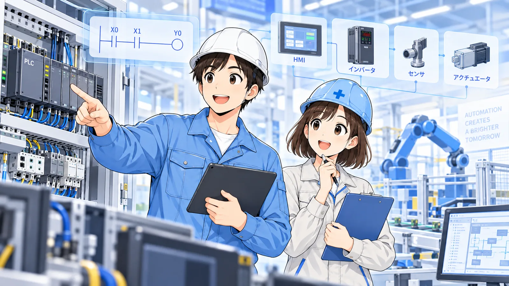
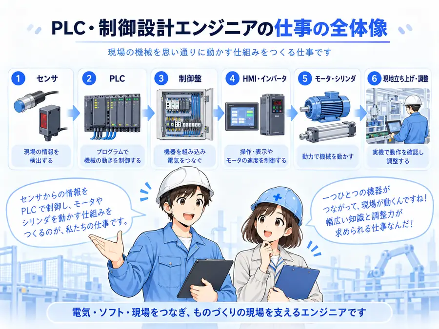
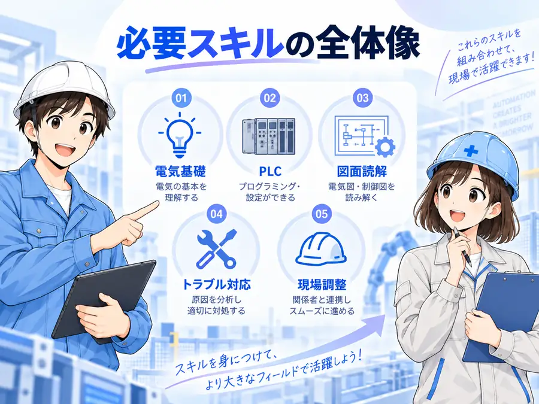
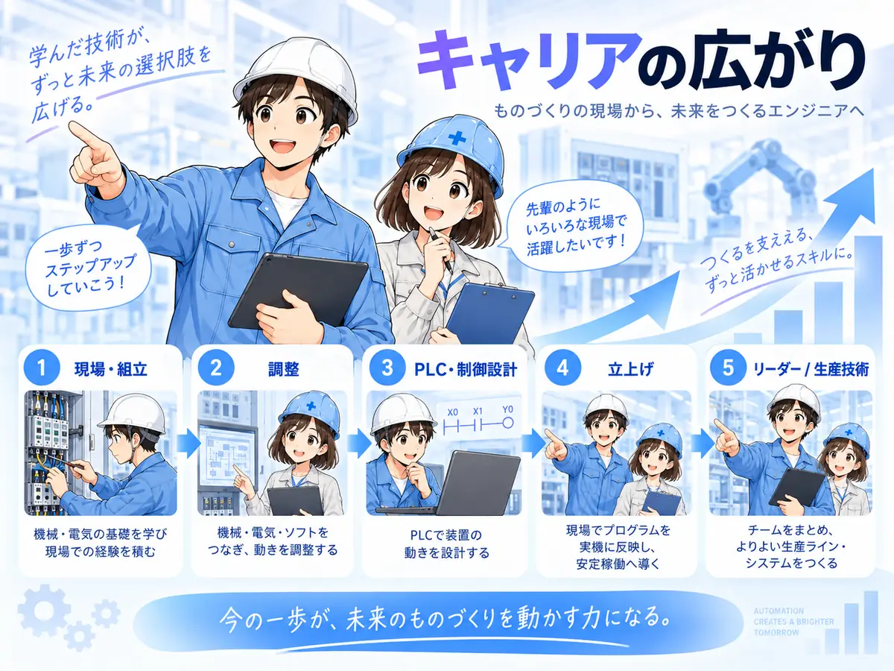

PLC・制御設計エンジニアとは？
仕事内容・必要スキル・キャリアを解説
PLC・制御設計の仕事は「PLCのプログラムを書くこと」だけではありません。センサやモータ、電磁弁、安全機器、配線、試運転、トラブル対応まで含めて、設備を狙いどおりに動かすための仕事です。
PLC・制御設計エンジニアは「設備を動かす仕組み」を作る仕事
工場や設備では、押しボタンを押したらモータが動く、センサが反応したらシリンダが止まる、異常が起きたら安全に停止する、といった一連の動作が必要です。こうした動きを電気回路やPLCプログラムで組み立て、実機で確認するのが制御設計の中心です。
会社によって担当範囲は異なります。PLCプログラムを中心に担当する会社もあれば、制御盤の回路設計、部品選定、I/O割付、HMI、インバータ、現地調整まで一人で広く担当する会社もあります。


PLCが書ければ、制御設計の仕事はだいたいできるんですか？

PLCは大事だけど、それだけでは足りないよ。入力側のセンサ、出力側の機器、電源、回路、安全、現場での確認までつながって初めて設備として動くんだ。
主な仕事内容
仕様を確認する
設備が何をするのか、どの順番で動くのか、異常時にどう止めるのかを確認します。ここが曖昧だと、後のプログラムも回路も安定しません。
回路・I/Oを設計する
センサやスイッチをどの入力へ入れるか、モータや電磁弁をどの出力で動かすか、電源やCOMをどう構成するかを決めます。
PLCプログラムを作る
インターロック、自己保持、タイマ、カウンタ、異常処理、手動・自動切替などを組み合わせて設備の動作を作ります。
試運転・デバッグをする
実機を動かしながら、入力が入るか、出力が出るか、機器が動くかを一つずつ確認します。ここでは配線ミスや機械側の問題も含めた切り分けが必要です。
立上げ後の改善・トラブル対応
サイクルタイム改善、誤動作対策、保全性の改善、設備変更への対応などを行います。
必要なスキルは4つに分けて考えると分かりやすい

1. 電気の基礎
電圧・電流、DC24V、接点、リレー、電源、接地など。回路図を追うための土台です。
2. PLC・制御の基礎
入出力、ラダー、自己保持、タイマ、インターロック、異常処理など。設備動作の中心です。
3. 周辺機器の理解
センサ、モータ、インバータ、電磁弁、エアシリンダ、安全機器など、実際に動く側の知識です。
4. トラブルを切り分ける力
PLCだけを疑わず、電源・入力・出力・配線・機器・機械側を順番に確認する力です。
当サイトで先に押さえたい記事
未経験から目指すなら、いきなり全部を覚えなくていい
未経験から制御設計を目指す場合は、最初から高度なPLC命令やネットワークまで覚える必要はありません。まずは「電源 → 入力 → PLC内部処理 → 出力 → 機器」という流れを追えることが重要です。
- DC24V、接点、リレーなど電気の基本を理解する
- PLCの入力と出力の意味を理解する
- 簡単な自己保持・インターロックを読めるようにする
- センサや電磁弁など周辺機器とPLCをつなげて考える
- 異常時に「どこまで信号が来ているか」を追えるようにする
この順番で学ぶと、単なる暗記ではなく設備全体の流れとして理解しやすくなります。
経験者は「担当範囲」を広げるほどキャリアの選択肢が増えやすい
同じPLC経験でも、担当できる範囲によって仕事の幅は変わります。PLCだけでなく、回路設計、HMI、インバータ、サーボ、安全、現地調整、仕様打合せまで経験すると、設備メーカー、SIer、生産技術、設備保全など複数の方向へつながりやすくなります。

反対に、特定メーカーの特定機能だけに経験が偏っている場合は、次の職場で求められる範囲とのギャップが出ることがあります。転職前には「できること」と「まだ経験していないこと」を分けて整理しておくと判断しやすくなります。
転職求人を見るときに確認したいポイント
- 担当範囲：PLCだけか、回路設計や現地調整まで含むか
- 設備分野：自動車、食品、物流、半導体、工作機械など何を扱うか
- 使用PLC：三菱、オムロン、キーエンス、Siemensなど、どの環境を使うか
- 出張・休日対応：立上げの頻度や休日工事の有無
- 教育体制：未経験者がどのように現場へ入るか
- キャリア：設計、現地調整、マネジメント、生産技術など次の道があるか
「PLC経験者募集」とだけ書かれていても、実際の仕事はかなり違います。求人票で分からない部分は、面接や転職サービスの担当者を通して具体的に確認するのがおすすめです。
転職先を探す段階なら、サービス比較はこちら
正社員転職・スカウト・技術者派遣は役割が違います。自分に合う探し方を先に分けて確認できます。
転職サービスは「今すぐ転職する人」だけのものではない
現在の経験でどんな求人があるかを見るだけでも、自分に足りないスキルや、評価されやすい経験が見えてきます。ただし、求人を見ることと転職を決めることは別です。
このサイトでは、電気・FA・製造業との相性や働き方の違いを分けて転職サービスを比較します。広告・アフィリエイトリンクは各サービスとの提携承認後に掲載します。
転職サービスの選び方・比較
正社員転職、スカウト、技術者派遣を同じ土俵で比べず、目的別に整理しています。
まだ転職先探しの前段階なら
仕事 → 必要スキル → キャリアの順で整理できます。
まとめ
PLC・制御設計エンジニアは、PLCプログラムだけではなく、電気回路・入出力・周辺機器・安全・試運転までをつないで設備を動かす仕事です。
これから目指す人は電気とPLCの基礎から順番に、経験者は担当できる範囲を広げる視点で学ぶと、仕事の幅とキャリアの選択肢を増やしやすくなります。